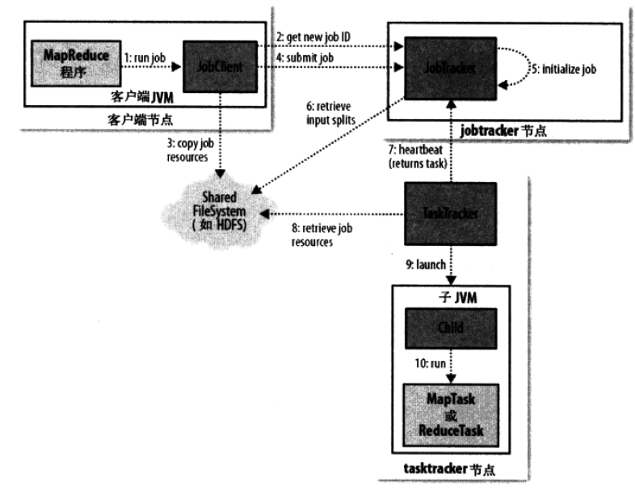
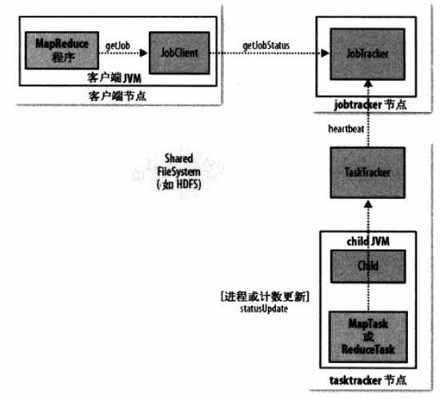

Big Data Interview
Hadoop
关键技术
数据分布在多台机器
可靠性：每个数据块都复制到多个节点
性能：多个节点同时处理数据
计算随数据走
网络IO速度 << 本地磁盘IO速度，大数据系统会尽量地将任务分配到离数据最近的机器上运行（程序运行时，将程序及其依赖包都复制到数据所在的机器运行）
代码向数据迁移，避免大规模数据时，造成大量数据迁移的情况，尽量让一段数据的计算发生在同一台机器上
串行IO取代随机IO
传输时间 << 寻道时间，一般数据写入后不再修改
Hadoop可运行于一般的商用服务器上，具有高容错、高可靠性、高扩展性等特点
特别适合写一次，读多次的场景
适合: 大规模数据, 流式数据（写一次，读多次）, 商用硬件（一般硬件）
不适合: 低延时的数据访问, 大量的小文件, 频繁修改文件（基本就是写1次）

列出Hadoop集群的Hadoop守护进程和相关的角色。

Block数据块;
基本存储单位，一般大小为64M（配置大的块主要是因为：1）减少搜寻时间，一般硬盘传输速率比寻道时间要快，大的块可以减少寻道时间；2）减少管理块的数据开销，每个块都需要在NameNode上有对应的记录；3）对数据块进行读写，减少建立网络的连接成本）
一个大文件会被拆分成一个个的块，然后存储于不同的机器。如果一个文件少于Block大小，那么实际占用的空间为其文件的大小
基本的读写单位，类似于磁盘的页，每次都是读写一个块
每个块都会被复制到多台机器，默认复制3份
NameNode:
存储文件的metadata，运行时所有数据都保存到内存，整个HDFS可存储的文件数受限于NameNode的内存大小
一个Block在NameNode中对应一条记录（一般一个block占用150字节），如果是大量的小文件，会消耗大量内存。同时map task的数量是由splits来决定的，所以用MapReduce处理大量的小文件时，就会产生过多的map task，线程管理开销将会增加作业时间。处理大量小文件的速度远远小于处理同等大小的大文件的速度。因此Hadoop建议存储大文件
数据会定时保存到本地磁盘，但不保存block的位置信息，而是由DataNode注册时上报和运行时维护（NameNode中与DataNode相关的信息并不保存到NameNode的文件系统中，而是NameNode每次重启后，动态重建）
NameNode失效则整个HDFS都失效了，所以要保证NameNode的可用性
Secondary NameNode：
定时与NameNode进行同步（定期合并文件系统镜像和编辑日志，然后把合并后的传给NameNode，替换其镜像，并清空编辑日志，类似于CheckPoint机制），但NameNode失效后仍需要手工将其设置成主机
DataNode：
保存具体的block数据
负责数据的读写操作和复制操作
DataNode启动时会向NameNode报告当前存储的数据块信息，后续也会定时报告修改信息
DataNode之间会进行通信，复制数据块，保证数据的冗余性
Hadoop 新旧架构对比

旧的MapReduce架构
JobTracker：
这是运行在Namenode上，负责提交和跟踪MapReduce Job的守护程序。负责资源管理，跟踪资源消耗和可用性，作业生命周期管理（调度作业任务，跟踪进度，为任务提供容错）
TaskTracker：
这是Datanode上运行的守护进程。它在Slave节点上负责具体任务的运行。
旧框架存在问题：
JobTracker是MapReduce的集中处理点，存在单点故障
JobTracker完成了太多的任务，造成了过多的资源消耗，当MapReduce job 非常多的时候，会造成很大的内存开销。这也是业界普遍总结出老Hadoop的MapReduce只能支持4000 节点主机的上限
在TaskTracker端，以map/reduce task的数目作为资源的表示过于简单，没有考虑到cpu/ 内存的占用情况，如果两个大内存消耗的task被调度到了一块，很容易出现OOM
在TaskTracker端，把资源强制划分为map task slot和reduce task slot, 如果当系统中只有map task或者只有reduce task的时候，会造成资源的浪费，也就集群资源利用的问题

YARN就是将JobTracker的职责进行拆分，将资源管理和任务调度监控拆分成独立#x7ACB;的进程：一个全局的资源管理和一个每个作业的管理（ApplicationMaster） ResourceManager和NodeManager提供了计算资源的分配和管理，而ApplicationMaster则完成应用程序的运行
ResourceManager: 全局资源管理和任务调度
NodeManager: 单个节点的资源管理和监控
ApplicationMaster: 单个作业的资源管理和任务监控
Container: 资源申请的单位和任务运行的容器
旧架构 基本流程


YARN 基本流程